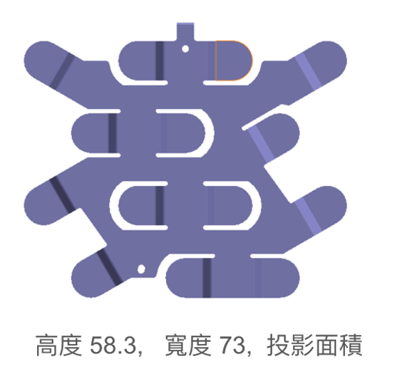
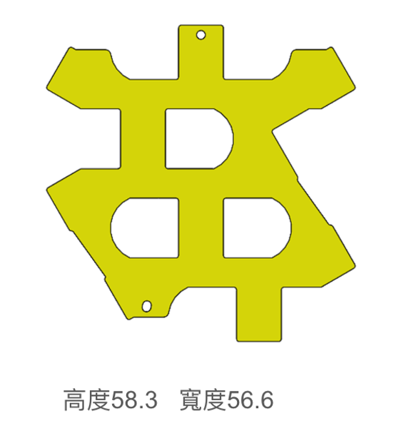

物理阻抗分析系統 (符合 6 大新規)
已將 舌片阻抗(Rule 5)、雙焊點並聯限制(Rule 3)、與截面12mm寬度限制(Rule 2, 6) 納入全雙層 Dijkstra 材料網絡求解器中。
與電芯連接的導片 (fig01)
點擊或拖放上傳，或直接在此貼上 Ctrl+V 圖片
※ 欄位1：上傳與電芯連接之導片 (白色以外將轉為紅色)
複合銅片 (fig11)
點擊或拖放上傳，或直接在此貼上 Ctrl+V 圖片
※ 欄位4：上傳複合銅片 (白色以外將轉為綠色)
※ 若未輸入數值或清除，系統會預設使用 0.00001 Ω 計算。
點位標記面板 (Fig08 & Fig15 & Fig16)
請在下方兩個導片上分別標示正負極電極與雷射焊接位置。系統會自動計算實體位置對齊。
Part01：與電芯連接之導片 (fig02/08/15)
Part11：複合銅片 (fig12/16)
複合導片等效阻抗計算完成
總等效阻抗 (Equivalent R)
-
Part01 幾何資訊 (fig03)
有效面積: -
材料電阻率: -
Part11 幾何資訊 (fig13)
有效面積: -
材料電阻率: -
Gemini 智慧診斷
等待載入 AI 診斷或物理引擎模擬分析報告...
複合導片組裝與走電模擬 (fig21)
Fig21 總覽圖顯示 Part01 (紅) 與 Part11 (綠) 的疊加組裝。依照新規，發光曲線在繞流並聯段（最多2個焊點）呈現雙層導通輝光，其餘段為 Part01 單層導通，兩端點各別包含舌片阻抗特徵。
走電路徑阻抗細部分解 (6大規則追蹤)
上傳樣本與規格參考
使用您提供的真實導片幾何規格與圖像做為標準參考樣張
標準樣張幾何規格
高度: 58.3 mm | 寬度: 73.0 mm | 具有指叉形狀

※ 提示：此樣張具有多折線指叉形狀。在點位標記中，正極 (P) 和負極 (N) 應標記於指叉的核心走電交會軸線上。
標準樣張幾何規格
高度: 58.3 mm | 寬度: 56.6 mm

※ 提示：複合銅片用於並聯降阻。標記雷射焊接點 W 時，兩張圖的焊接座標應對齊至相同物理結構區。